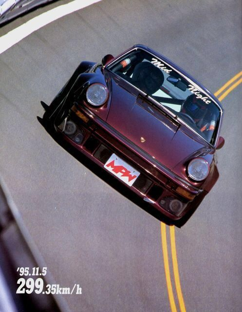

La historia del famoso club
Se dice que el club mid-Night empezó actuar en los remotos años 70 aunque hay aserciones de que el punto más álgido del colectivo se solidificó a lo largo de los años 90.
Lo que es un hecho contrastado, es que las hazañas de sus integrantes marcaron una época como tal.
La basta cultura automovilística del Japón, les llevó a conjugar entre sus territorios inimitables bandas de corredores callejeros,
algunos de ellos profesionales hoy en sus reconocidos como kazuhiko Smokey nagata fundador ilustre taller de preparación top secret
La Autopista de shuto es una de las rutas mas importantes que enlaza las islas artificiales de la bahía de tokio con el uso de los puentes y túneles submarinos.
Asi pues, el demnominado wangan, durante el día se veía condicionado por la congestión del tráfico; camiones taxis atascos de más de una hora y todo lo que conlleva una extensa población como nipona de manera casi ilusoria,
la excelsa afluencia de vehículos se disipa por completo al caer la no cu e transformando los cuatro carriles de la autopista, en una zona desértica que serviría como punto de reunión para los corredores,
a pesa de aquel sería el escenario de mayor éxito entre los corredores, la actividad del Mid-Night no se vio limitada al wanga, si no que también competían en tomei a principios de los años 80 y en otros lugares como turnpike of hakone, que también es un lugar conocido touge
